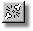
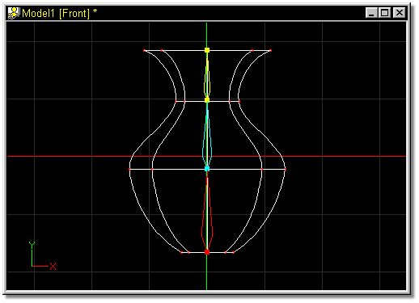
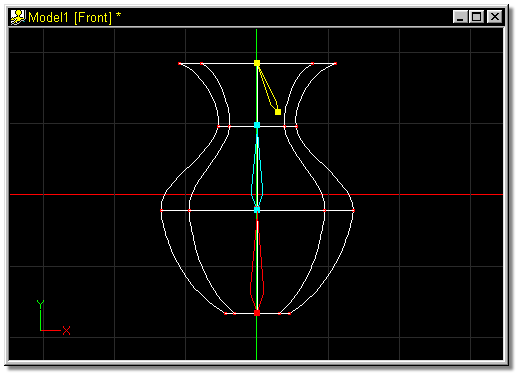

Breaking the connection between two bones is sometimes necessary in redefining hierarchies. To detach two bones, select the child bone by clicking on it with the mouse, then click the Detach button on the Tool Panel, or uncheck the Attached to Parent” box on the Bone Properties Panel.

Click on the bone to detach from its parent in either the bones window or the Project Workspace (the handles will turn yellow).

Figure 1
Click the Detach button. No obvious changes will occur to the screen or the model, but the two bones are now disconnected, and can be moved freely of each other. This is indicated by the movement shown in Figure 2.

Figure 2
Add Bone
Attach Bone
Group
Lasso
Delete Bone